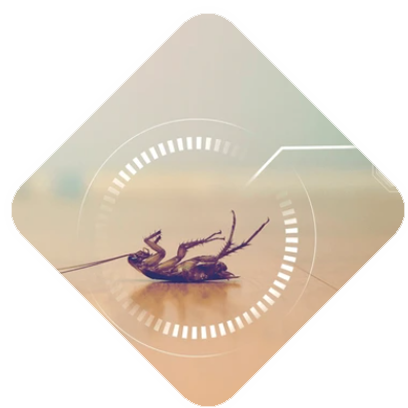

<div class="our_section layout_padding">
    <div class="container">
       <h1 class="our_text"><strong>OUR SERVICES</strong></h1>
       <p class="fact_text">
         India's Premier Pest Control takes pride in being recognized as a professionally managed pest control organization. Our team comprises highly qualified individuals who supervise and guide our trained and experienced technicians. Our ultimate goal is to deliver quality service and ensure complete customer satisfaction. With expertise spanning residential, commercial, industrial, institutional, hotel, and restaurant sectors, we are committed to providing the best and most cost-effective solutions to achieve 100% customer satisfaction.
       </p>
       <p  class="fact_text">Our management focuses on addressing customers' pest problems by offering customized solutions using the latest techniques and methodologies. India's Premier Pest Control is your one-stop solution for pest issues. Our dedicated workforce is well experienced and equipped to provide prompt and customized solutions for any pest-related concerns you may have. We are eager to serve you and guarantee total peace of mind regarding all your pest problems.</p>
       <p class="fact_text">We offer a comprehensive range of Pest Management services:</p>
       <p class="client_long_text">
         
         <ul class="fact_text"> 
               <li>Termite proofing (Pre construction and post construction)</li>
               <li>Rodent Control</li>
               <li>General pest Control/Cockroach control (Odourless-Gel Baiting Technology)</li>
               <li>Fly Control</li>
               <li>Mosquito Control</li>
               <li> Lizard control</li>
               <li>Fabric pest Management</li>
               <li>Spider control</li>
               <li>Prophylactic Treatment- for godowns and warehouses</li>
               <li>Snake Control</li>
               <li>Bird control-netting & Spikes - New Service</li>
         </ul>
       <div class="row padding_top_0">
          <div class="col-lg-4">
             <div class="image_7"><a href="#"></a></div>
             <h2 class="design_text">TERMITE SERVICE</h2>
             <p class="fact_text">Termite services typically involve inspections, treatments, and preventive measures to protect buildings from termite infestations. If you're experiencing termite problems, it's crucial to address them promptly to prevent structural damage to your property. Consider reaching out to professional pest control companies that offer termite services in your area for assistance.</p>
          </div>
          <div class="col-lg-4">
             <div class="image_7"><a href="#"></a></div>
             <h2 class="design_text">RODENT CONTROL SERVICE</h2>
             <p class="fact_text">By understanding the demands of our patrons in the best possible way, we are increasingly engrossed in offering Rodent Control Service to our clients. Delivered in tune with the standards defined by the industry, these services are enormously in demand. Due to their cost-effectiveness, these provided services are hugely treasured.</p>
          </div>
          <div class="col-lg-4">
             <div class="image_7"><a href="#"></a></div>
             <h2 class="design_text">GENERAL PEST SERVICE </h2>
             <p class="fact_text">For general pest control or specifically cockroach control, it's often best to engage with professional pest control services. Here's what you can typically expect: Inspection:
                A thorough inspection of your property will be conducted to identify the extent of the infestation and areas where pests are active.
             </p>
          </div>
          <!-- <div class="bt_main">
             <div class="seemore_bt"><a href="services.html">See More</a></div>
          </div> -->
       </div>
    </div>
 </div>